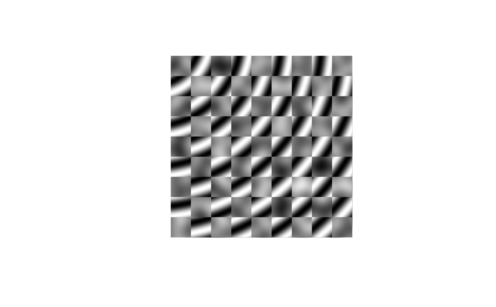
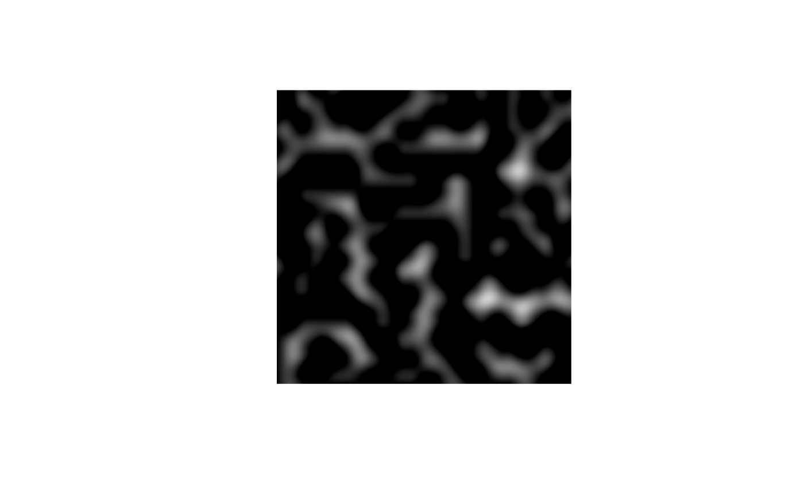

Most modifications of values in a long_grid are quite simple due to the wealth of vectorised functions avaliable in R. ambient provides a little selection of handy functions to compliment these
Values to modify
A vector of the same length as x and y. Assumed to be between
0 and 1 (values outside of this range is capped). The closer to 1 the more of
x will be used and the closer to 0 the more of y will be used
The range of x to use for normalisation
The output domain to normalise to
The lower and upper bounds to cap to
grid <- long_grid(seq(1, 10, length.out = 1000), seq(1, 10, length.out = 1000))
grid$chess <- gen_checkerboard(grid$x, grid$y)
grid$noise <- gen_perlin(grid$x, grid$y)
grid$ripple <- gen_waves(grid$x, grid$y)
# Blend two values based on a third
grid$mix <- blend(grid$noise, grid$ripple, grid$chess)
plot(grid, mix)

# Cap values between 0 and 1
plot(grid, cap(noise))
